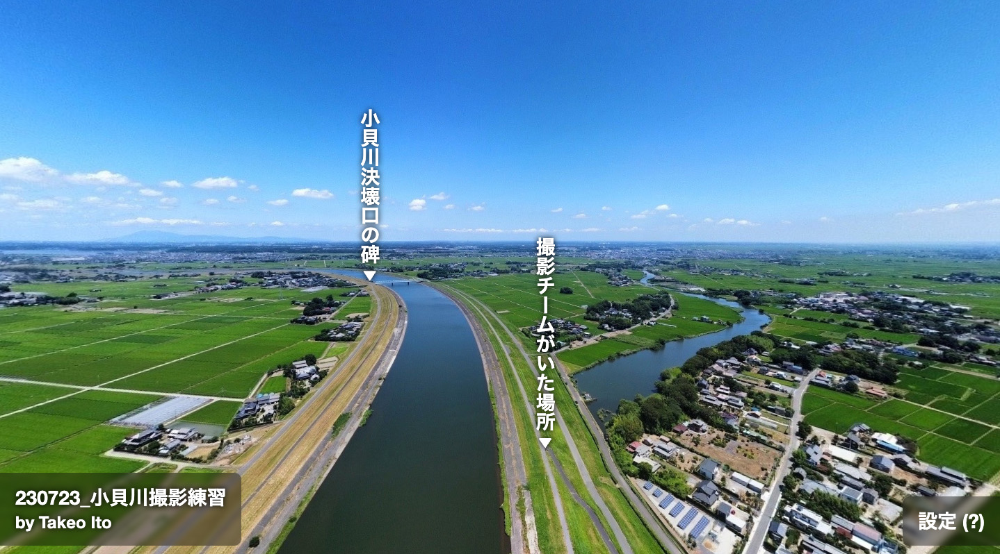
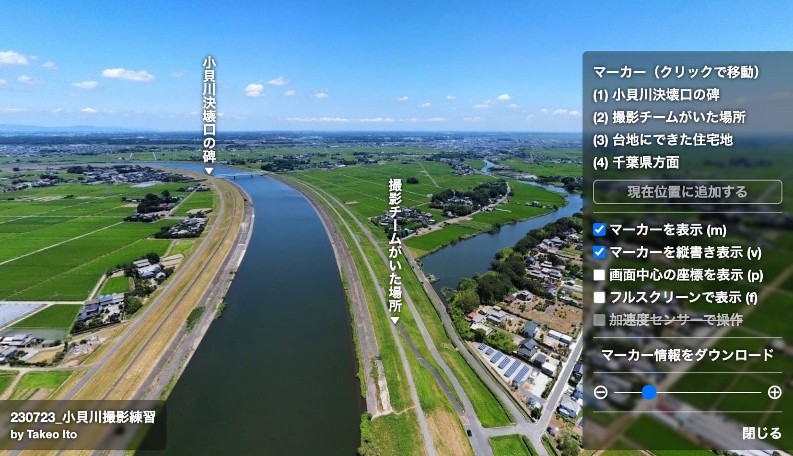

画像一覧
使い方

閲覧画面
- 画面のドラッグまたは矢印キーで視点を移動できます。
- マウスホイールで拡大縮小できます。
- 右下の設定をクリックすると設定画面が開きます（下の画像）。

設定画面を開いた状態
-
マーカー：表示中の画像のマーカーの一覧です。クリックすると視点を移動します。キーボードで対応する数字を押しても視点を移動します。
- マーカーを表示：画面上にマーカーが表示されます。
- マーカーを縦書き表示：マーカーのテキストが縦書き表示されます。
-
画面中心の座標を表示：画面中央に座標が表示されます。座標が表示されている間は一覧にあるボタンからマーカーを追加できます。
-
フルスクリーンで表示：フルスクリーンで表示します。スマートフォン等では何も起こらない場合があります。
-
加速度センサーで操作：加速度センサーが使える場合にクリックできます。クリックすると端末の向きで視点を操作できます。
-
マーカー情報をダウンロード：現在のマーカーの情報をファイルとしてダウンロードします。ダウンロードしたファイルはテキスト編集ソフトで編集できます。編集したファイルを画面にドラッグ＆ドロップするとマーカーを表示できます。
一部の項目はキーボードでも操作できます。たとえば (p)
と記載されている項目（画面中心の座標を表示）はキーボードの p
キーでも操作できます。